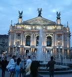

Визначні пам'ятки

Площа Ринок, Ратуша та Високий Замок — це ті місця, з яких варто починати знайомство з містом.
Кухня та гастрономія
Львівська кава, пляцки та галицький сирник. Гастрономічні заклади тут — це окремий вид мистецтва з унікальними концепціями.
Культура та традиції
Місто левів славиться своїми джазовими фестивалями та вуличними музикантами, які створюють неповторну атмосферу.
Особисті історії
Найбільше мені запам'ятався теплий вечір у одній із кав'ярень на площі Ринок, де ми з друзями годинами говорили про життя під звуки скрипки з вулиці.